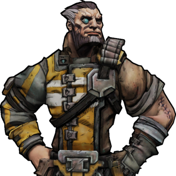
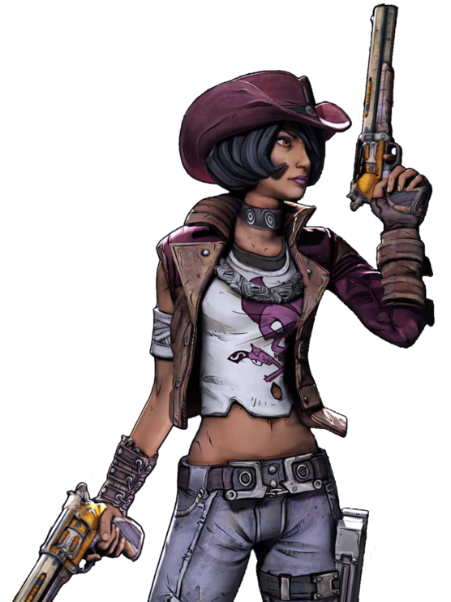

BORDERLANDS: THE PRE-SEQUEL
Athena: The Gladiator

Athena was a former assassin working in the Crimson Lance, a private mercenary army
hired by the megacorporation, Atlas. She was sent by Atlas to the planet Pandora
to aid the corporation's search for alien technology, in the form of Vaults. In addition to following
orders, her main objective on Pandora was to find her long-lost sister, Jess. Her plan was
to leave the Crimson Lance after she found her sister. When the Crimson Lance found out, they ordered a
total annihilation of the village that Jess lived in to keep Athena from leaving
the corps. Later, Athena found out she accidentally killed her sister. She left the Crimson Lance, plotting
to kill the general who ordered the attack on her sister's village. Once he was killed, she wandered
around Pandora aimlessly, looking for a job. Eventually, she was hired by Jack to go to the moon Elpis
and investigate a Vault.
As the narrator of the story, the plot of the story is told purely from her point of view.
Out of four Vault Hunters that Jack hired, Athena may have been the only one with
somewhat of a moral compass. Even then, her motivations were mainly due to money. She recognized Jack's gradual moral decay later in the game, which
prompted her to give up the money that he paid her. Despite this, she still went back to Jack for one final
job when she was unable to find a more stable source of income.
Wilhelm: The Enforcer

Wilhelm's past is largely a mystery, and the only real details about his childhood that were revealed
was that he was born with a bone disease that required him to get cybernetic implants at a young age.
Consequently, he became addicted to obtaining cybernetic enhancements.
Throughout the game, many characters warn him about the ethical implications of receiving so many
cybernetic implants. He's told that at some point, he'll become a remorseless killer who's more machine
than man. Wilhelm disregards these warnings, not because he's not worried about becoming more machine than man,
but because he doesn't see a problem with it. This directly leads to Wilhelm's future employment as one of Jack's most
trusted employees, since Jack knows he can trust him to carry out his will with no hesitation or weight on his conscience.
Wilhelm makes an appearance in Borderlands 2 as a boss, in which he's become around 65% robot. Jack claims to have made Wilhelm's dream come
true, and given him all the implants he could ever ask for.
Nisha: The Lawbringer

Nisha was known on Pandora as the "bandit who kills bandits," due to her reputation for killing political leaders.
Her reputation was what caught the attention of Jack. After the events of the Pre-Sequel, Nisha began dating Jack, despite knowing
about his plan to disintegrate the entire population of Pandora. He made her sheriff of a town called Lynchwood,
where she personally enforced over 200 laws that were punishable by death.
Nisha is arguably as much of a sociopath as Jack is, which would explain why she didn't see a problem with dating
a man casually suggesting mass genocide as a solution to regain control over Pandora.
Claptrap: FR4G-TP

Claptraps are general purpose robots manufactured by Hyperion. Their most distinct characteristics are their annoying voices and
self-centered personalities. They appear in every game in the franchise, usually as a tutorial character. In the Pre-Sequel,
Claptrap runs into Jack and brags about its past as an assassin, which inspires Jack to reprogram and upgrade it to give it
combat capabilities.
Claptrap was never meant to be a recurring character in Borderlands. Its appearance in the first game was short, but it started
to play a bigger role in Borderlands 2. Claptrap was meant to be as boring as possible, even its design was meant to be a simpler version
of WALL-E. The love-hate relationship that fans had with it led to becoming a main character.
Jack
.png)
In Borderlands 2, Handsome Jack is the megalomaniacal CEO of Hyperion, obsessed with opening Vaults and controlling the monsters behind
them. He holds his daughter Angel, who was born with the ability to control technology, hostage and uses her to control every Hyperion satellite
in the galaxy. He hires Vault Hunters with the promise of wealth and fame, only to sabotage the train to kill his competition.
In the Pre-Sequel, Jack is just one of many programmers working in Hyperion. He builds an ultra-powerful laser in a Hyperion space station without his superiors
knowing. It was obvious that he was already incredibly ambitious, after he successfully hired the Borderlands 1 Vault Hunters to retrieve an eye from the Vault Monster.
He planned on using the eye to power the laser and destroy bandit settlements on Pandora, which he felt was the right thing after a bandit inadvertently killed his wife.
When Jack sees a vision of the future after opening the Vault on Elpis, he finally reaches his breaking point. He sees a future in which he successfully opens
a Vault on Pandora, gaining control of the Vault Monster hidden away there. At this point, he has been betrayed by both groups of Vault Hunters he's hired, and it tips him over the edge.